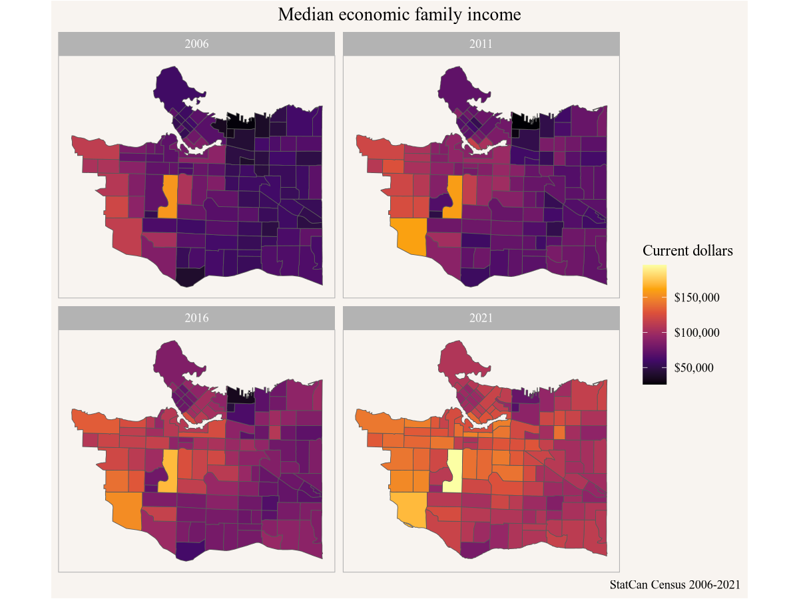

10 Geography of income change
Incomes in a region change by people getting higher (or lower) incomes as well as people moving in and out of a region. We can observe the aggregate effects by looking at change in income statistics.
10.1 Question
Where and how did incomes change in the City of Vancouver?
10.2 Data sources
The main data sources for fine-geography income data is the census, although custom tabulations of T1FF taxfiler data can offer insight of this on an annual basis at the census tract geography. For our question we are interested in broad temporal ranges, so the 5-year census data will work well.
We need to decide which income concept is best suited for our question, it is worthwhile to spend some time with the Census Income Reference Guide to understand how the data was collected and what income concept to use. Prior to 2011 the income data was part of the long form census. In 2011 the mandatory long form was replaced with the voluntary NHS, given people the option to link directly to T1FF taxfiler data or to detail the income data manually. Starting 2016 income data was linked for all people to the T1FF taxfiler data.
The question what income concept to use, e.g. individual income, household income, family income, employment income, etc, depends on the particular question we are interested in. For now we will go with family income, trying to understand how the income situation of families varies across Vancouver and across time. Family income is less affected by demographic factors like the distribution of single vs multiple person households, but is still impacted by e.g. differences in shares of seniors vs young families vs families at the peak of their earnings.
10.3 Data acquisition
We again use the CensusMapper API tool to locate the internal CensusMapper identifiers for Median Total Income of Economic Families for the years 2006 through 2021. For 2001 the standard census products reported income for census families instead of economic families, so they aren’t directly comparable. As geographic breakdown we choose census tracts.
To facilitate the data import we write a wrapper function to acquire the census data for each of our four years. For a given census year we create the corresponding dataset identifier and select the appropriate income variable. To reduce clutter we select just the income variable and also keep the geographic identifier, and add the census year to the table.
Code
get_census_data <- function(year){
year <- as.character(year)
get_census(year,regions=regions,
vectors=c("ef_income"=as.character(income_vectors[year])),
geo_format="sf",level="CT") |>
select(GeoUID,ef_income) |>
mutate(Year=year)
}Importing the data is easy now, we just call our function for each census year and collect it into a data frame.
Let’s take a quick look.
Code
ggplot(income_data) +
geom_sf(aes(fill=ef_income)) +
scale_fill_viridis_c(option="inferno", labels=scales::dollar) +
facet_wrap(~Year) +
coord_sf(datum=NA) +
labs(title="Median economic family income",
fill="Current dollars",
caption="StatCan Census 2006-2021")
10.4 Data preparation
Looking at the above graph we can see the geographic variation in each year, but it is difficult to discern geographic trends over time as incomes have gone up a lot during this timeframe. It makes sense to look at inflation-adjusted incomes instead. For this we use annual consumer price index data from StatCan Table 18-10-0005. To simplify things we locate the specific vector v41693271 for the all-time CPI.
10.5 Analysis and visualization
With this, we can adjust the census data by inflation. We choose to base everything on 2021 dollars.
Now we just join the inflation data onto our income data by year, this adds the CPI column from the inflation data frame to our income with the CPI value corresponding to the value in the Year column in each of the two data frames. We then colour by inflation-adjusted income using the same code for graphing as above.
Code
income_data |>
left_join(inflation,by="Year") |>
ggplot() +
geom_sf(aes(fill=ef_income/CPI)) +
scale_fill_viridis_c(option="inferno", labels=scales::dollar) +
facet_wrap(~Year) +
coord_sf(datum=NA) +
labs(title="Median economic family income",
fill="Constant 2021\ndollars",
caption="StatCan Census 2006-2021")This shows more clearly how incomes have increased over time, but it would be nice to compute the change in income 2006 to 2021 for each individual census tract. But keen observers will notice that some census tracts have changed over the years, making it very difficult to compare data directly.
10.6 Data acquisition (part 2)
Fortunately the problem of making census data comparable across time has been solved with the tongfen package. This allows us to create a semi-custom tabulation on the fly on a harmonized geography based on census tracts by aggregating census data appropriately. One problem is that medians can’t be aggregated, so we need to either use average income instead or be content that medians can only be approximated. By default the tongfen package aggregates medians as if they were averages and emits a warning. This is the route we will take for this.
To start out, we need to create metadata for the tongfen procedure. This is automated for Canadian census data, leveraging the metadata built into CensusMapper.
Code
library(tongfen)
meta <- meta_for_ca_census_vectors(income_vectors)
meta# A tibble: 8 × 10
variable label dataset type aggregation units rule parent geo_dataset year
<chr> <chr> <chr> <chr> <chr> <chr> <chr> <chr> <chr> <int>
1 v_CA21_9… 2021 CA21 Orig… Median of … Curr… Medi… v_CA2… CA21 2021
2 v_CA16_2… 2016 CA16 Orig… Median of … Curr… Medi… v_CA1… CA16 2016
3 v_CA11N_… 2011 CA11N Orig… Median of … Curr… Medi… v_CA1… CA11 2011
4 v_CA06_1… 2006 CA06 Orig… Median of … Curr… Medi… v_CA0… CA06 2006
5 v_CA21_9… v_CA… CA21 Extra Additive <NA> Addi… <NA> CA21 2021
6 v_CA16_2… v_CA… CA16 Extra Additive <NA> Addi… <NA> CA16 2016
7 v_CA11N_… v_CA… CA11N Extra Additive <NA> Addi… <NA> CA11 2011
8 v_CA06_1… v_CA… CA06 Extra Additive <NA> Addi… <NA> CA06 2006The metadata contains our original income data, as well as extra variables needed to properly aggregate the data. Getting the income data on a common geography is easy now.
Code
unified_income_data <- get_tongfen_ca_census(regions,meta)10.7 Analysis and visualization
In line with what we did before we look at inflation-adjusted income change. To this end we extract the adjustment factor for the 2006-2021 timeframe.
With that we can simply plot the data, mapping the inflation-adjusted percent change 2006 to 2021.
Code
unified_income_data |>
ggplot() +
geom_sf(aes(fill=`2021`/`2006`*inflation_2006_2021-1)) +
scale_fill_viridis_c(option="cividis", labels=scales::percent) +
coord_sf(datum=NA) +
labs(title="Change in economic family income",
fill="Change 2006-2021\n(inflation adjusted)",
caption="StatCan Census 2006-2021")
10.8 Interpretation
In summary we see that income of economic families changed fastest in the Downtown Eastside, Grandview-Woodlands and Strathcona neighbourhoods, effectively doubling. Incomes increased least on the West Side, where they were already quite high to start with, and increased by about 50% throughout much of the East Side.